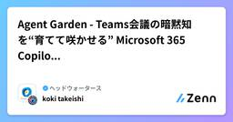
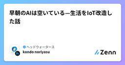

ヘッドウォータースのフィード
https://zenn.dev/p/headwaters
株式会社ヘッドウォータースのテックブログです。 AIエージェント、生成AI、Azure、GitHub Copilot、IoT、XR系などData&AIとApp modernizeに関して幅広く投稿します！
フィード

Microsoft Build 2026で発表されたGitHub・GitHub Copilotのまとめ
ヘッドウォータースのフィード
参考出典GitHub Copilot app: The agent-native desktop experience - GitHub BlogCopilot SDK is now generally available - GitHub ChangelogCopilot CLI: Improved UI, rubber duck, prompt scheduling, and voice input - GitHub ChangelogCloud and local sandboxes for GitHub Copilot now in public preview - ...
1日前

Windows Development Skillsの概要と導入手順
ヘッドウォータースのフィード
概要Microsoftは、2026年6月3日（日本時間）に開催された年次イベント"Microsoft Build 2026"で、AIエージェントにWindowsアプリ開発のライフサイクル全体に関する知識を与える"Windows Development Skills"の一般提供を開始しました 。https://youtu.be/7OK30hI5h-I?si=4_PiHknjf51rCo7C 主な特徴項目内容形式プラグイン形式で、AIエージェントにインストールして利用対象AIGitHub Copilot、Claude Code、OpenAI Code...
1日前

Microsoft Scout について
ヘッドウォータースのフィード
概要Microsoft Scoutは、Microsoftが"Build 2026"で発表した常時稼働型の自律エージェントで、Microsoft 365の業務フローに入り込んで、会議調整や資料準備、フォローアップまで代行するのが特徴です。※今後は"Scout"の略称とします。※検証はまだなので、検証次第、共有します。 何が新しいかScoutは、Microsoftが新しく定義した"Autopilots"というカテゴリの第1弾で、単発の質問応答ではなく、バックグラウンドで継続的に動き、必要なアクションを自律的に進めます。対象は Teams、Outlook、OneDriv...
2日前

Microsoft Build 2026 Keynote 現地レポート
ヘッドウォータースのフィード
執筆日2026/6/3 前提本内容は現地からの速報ベースのレポートです。一部に誤りが含まれる可能性があり、今後適宜修正していきます。ご了承ください。 イントロダクションBuild 2026 では、発表内容が以下の 4つのレイヤー に分けて整理されていました。InfrastructureModels + Context + ToolsAgent runtimeDeveloper tools Layer 1: Infrastructureこのレイヤーでは、AI開発を支える 物理的・基盤的なインフラ の発表が中心です。今年は、クラウドだけでなく「ロー...
4日前

【仮想環境】難しく考えず大枠をとらえてみよう
ヘッドウォータースのフィード
はじめにPythonでプログラムを書くときは、コードだけでなく「実行するための環境」が必要になります。Pythonで書いたコードはただの文字です。ただの文字を読むために必要なのが環境ですね。みなさんPCにPythonをインストールしましたね。これで立派な「Pythonが動く環境」が1つ構築されたともとらえられます。その上で、Flaskなどのフレームワークやライブラリを追加することで環境を磨いていきます。 仮想環境とは何かでは、仮想環境とは何か。Pythonを1つだけインストールした状態だと、その環境に入れたライブラリやバージョンをすべてのプロジェクトで共有することに...
4日前

【Linux】初心者に見てほしいコマンドまとめ
ヘッドウォータースのフィード
はじめにLinuxを触っていくうえで覚えておきたいコマンドをまとめています。WindowsでいうCtrl+Cのように、ぱっと使えるとよいものになりますので、ぜひ実践の中で使いこなして覚えていってください！ 現在地・移動 今いる場所を見る$ pwd # 今いるディレクトリを表示/home/user/project ディレクトリ移動$ cd folder # 下の階層へ移動$ cd .. # 1つ上に戻る$ cd ~ # ホームに戻る$ cd - # 直前の場所に戻る 一覧確認 中身を見る$ ls...
5日前

【ひとくちAzure】Azure External IDを理解する
ヘッドウォータースのフィード
Azure External IDとはAzure External IDは、自社テナント外のユーザーを認証・管理するための仕組みです。例えば、パートナー企業委託先顧客といった外部ユーザーをMicrosoft Entra IDで管理できます。External IDという名前は比較的新しいですが、実態としては以前から存在していた外部ユーザー管理機能を整理したものです。Microsoft Entra External ID├── B2B（Business-to-Business）└── CIAM（Customer Identity and Access Manage...
6日前

アサイン支援エージェント：ナレッジグラフで人材アサインの暗黙知を形式化する 1
1
ヘッドウォータースのフィード
はじめに本記事では、東京エレクトロンデバイス様主催の Microsoft Agent Hackathonにおいて、弊社 ヘッドウォータースプロフェッショナルズチームが取り組んだ内容についてご紹介します。 この記事のサマリーSES営業の現場では、新しいプロジェクト案件が舞い込むたびに、営業担当者の頭の中で似たような問いが繰り返されています。「この案件に合う人は誰だろうか」「あのメンバーは確かこういう経験があったはず」「今月稼働が空く予定の人はいたか」。こうした問いに答えるため、担当者は経歴書のPDFを開き、メンバープロフィールを参照し、稼働管理表を確認し、過去の類似案件の記憶を...
6日前

BPRを「やったけど何も変わらない」で終わらせない — 人/Agentの役割を再設計する。SyncLect BPR
ヘッドウォータースのフィード
はじめに「BPRをやった。けれど、何も変わらなかった」 — これが、本ハッカソンで私たちが正面から取り組んだ問いです。AIエージェント導入の相談は急増しています。設計レビュー、業務改革プロジェクト、Agentic Workflow の導入検討 — それぞれの会議で「どの業務をAIに任せるか」「人はどこに集中するか」「ROIは妥当か」といった議論が交わされます。ですが、現実には 「導入したが、現場の働き方は変わらなかった」「結局元のやり方に戻った」 という感覚で終わるプロジェクトが圧倒的に多い。（Agentを使ったBPRの成功率は10~30%程度 ※1）失敗の理由は業務への埋め...
6日前

Agent Garden - Teams会議の暗黙知を“育てて咲かせる” Microsoft 365 Copilot エージェント生成ツール
ヘッドウォータースのフィード
はじめに「ベテランの暗黙知を、いかに継続的にエージェントへ学習させ続けられるか」 — これが本ハッカソンで私たちが取り組んだ問いです。設計レビュー、技術勉強会、デイリー - 私たちが日々参加するTeams会議では、「なぜこの設計を選んだか」「この技術を標準化するには？」「ユーザー目線のUIか」など様々なナレッジ・スキル・パーソナリティに基づいた創造的会話や判断が行われています。ですが、現実には議事録とネクストアクションだけが残り、判断の根拠や暗黙知は流れて消えています。本当に使えるカスタムエージェントとは変化する状況や判断、スキルやナレッジの更新を取り込み、チームで継続的に育...
7日前

早朝のAIは空いている—生活をIoT改造した話 1
ヘッドウォータースのフィード
はじめにMicrosoft 365 Copilot の Cowork（フロンティア）をご存知でしょうか。複雑なタスクを Copilot に依頼し、バックグラウンドで長時間の推論を走らせることができる機能です。非常に便利な機能なのですが、2026年5月現在、まだフロンティア版ということもあり、利用者が集中する時間帯には推論が途中で止まったり、極端に遅くなることがあります。そこで私がたどり着いた結論は単純でした。「みんなが使わない時間に使えばいい」つまり、早起きです。 早起きできない問題とはいえ「明日から5時に起きよう」と決意するだけで起きられるなら誰も苦労しません。...
7日前

Power BI レポートをDatabricksダッシュボードに変換する
ヘッドウォータースのフィード
Azure DatabricksのGenie Codeに搭載されたBeta機能「Import BI files using Genie Code」を検証しました。https://learn.microsoft.com/ja-jp/azure/databricks/dashboards/manage/import-bi TL;DR観点内容できること.pbitファイルをGenie Codeに渡すと、Databricks上にスキーマ、テーブル、Metric View、ダッシュボードが自動生成される意味Power BIに閉じていたBI資産(モデル、メジャー、レ...
8日前
物語AI研究：創造性のリファクタリング
ヘッドウォータースのフィード
はじめに「AIに書かせたら話が崩壊した」「紙芝居的に画像生成で作ったキャラクターが次のコマに出てこない」――AIで物語をつくってみたことのある人なら一度は感じたことがあるのではないでしょうか。2026年5月現在では AI物語生成（Story Generation） は まだ 難しいです。単なるテキスト生成や画像生成を超えて、登場人物・世界観・因果関係・時系列が長距離にわたって整合するコンテンツを自動生成する問題です。この問題が難しいのは、局所的な流暢さだけでなく グローバルな一貫性（consistency）とコヒーレンス（coherence） が同時に求められるからです。逆に...
9日前
越見波（エツミナミ）エージェント ― 半導体設備異常検知のための自律型AI保全ソリューション
ヘッドウォータースのフィード
はじめに東京エレクトロンデバイス様主催の Microsoft Agent Hackathon に、Data Impact の Delivery Team として参加させていただきました。(https://zenn.dev/hackathons/microsoft-agent-hackathon-2026)本記事では、私たちが提案したソリューション 「越見波（エツミナミ）エージェント」 について、課題背景からアーキテクチャ、AIモデルの設計、エージェント層の実装まで、技術的な観点で詳しくご紹介します。 チーム紹介 会社についてData Impact Joint Sto...
9日前
GitHub Copilotで事故らないために最初にやるべき設定
ヘッドウォータースのフィード
はじめにGitHub Copilot を使っていると、次のようなことが気になる場面があります。危険なコマンドを提案してほしくない機密情報を扱う際に安全な実装をしてほしいセキュリティを意識した提案に寄せたいこうした課題に対して、本記事では、設定ファイル（copilot-instructions.md）を用いて Copilot の出力を制御する方法を整理します。 設定ファイルを作成するcopilot-instructions.md はプロジェクトルート直下の .github フォルダに配置します。project-root/└─ .github/ └─ co...
10日前
AIチャットアプリで学ぶAzureコスト設計 — App Service / Cosmos DB / Azure OpenAI / 外部AI
ヘッドウォータースのフィード
この記事について「PoCで動かしたAIチャットアプリを本番に載せたら、月額がPoCの10倍になって上長への説明に困った」。そういう経験、もしくはそれを予防したくて料金表を見始めた段階、どちらの立場でもこの記事の対象です。Azureの料金ページは網羅的ですが、「自分のワークロードに対してどう設計判断するか」は料金表だけ見ても分からない。そして、AIチャットアプリは特にこれが難しい。なぜなら、同じアプリの中に固定費的に課金されるサービス(App Service Plan)使用量(トークン)で課金されるサービス(Azure OpenAI、外部AI)スキーマ設計次第で課金が...
10日前
クォータ不足でAzure AI Foundryにモデルデプロイできない
ヘッドウォータースのフィード
何が起きていたかAzure AI Foundryでモデルをデプロイしようとしたとき、画面が「リソースとクォータを確認しています…」のまま進まず、実質的にデプロイできない状態になりました。原因は、クォータ不足(未割り当て)でした。 クォータとはクォータとは、「モデルをどれだけ利用できるか」を示す上限枠のことです。ただし注意点として、このクォータは「サブスクリプション × リージョン」の単位で管理されます。そのため、同じサブスクリプションであっても、リージョンが異なれば別々のクォータとして扱われます。 解決手順 クォータ割り当てを確認するAzure AI Foun...
11日前
Foundry Local 深掘り:in-process Core API・OpenAI 互換・WinML 統合で読み解く Windows
ヘッドウォータースのフィード
この記事についてMicrosoft の Foundry Local は、ローカル LLM を OpenAI 互換 API で動かせる新顔のランタイムです。winget install Microsoft.FoundryLocal 1行で入り、foundry model run phi-4-mini でチャットできる手軽さから「Ollama の Microsoft 版」と紹介されることもあります。ところが少し中を覗くと、Ollama とは抽象化のレイヤがかなり違う、別物のソフトウェアであることに気付きます。Foundry Local は CLI の裏に常駐するサービスでもあり、SD...
11日前
PRレビューツールが見逃すバグを、ClaudeにNext.js+Zustandのコードを渡して3つ発見した話
ヘッドウォータースのフィード
はじめにnpm run testも通った。ESLintも問題なし。TypeScriptの型チェックも通過。でも、実際に画面を操作したら壊れる——そういうバグが存在します。AIコードレビューの世界では「AIにテストコードを書かせると、バグを含んだ実装コードをそのまま正解としてテストを生成してしまう」という問題がよく指摘されています。コードを見せてテストを生成させると、バグを含んだコードを「正」としてテストが書かれてしまうのです（同語反復の罠）。でも今回やったのは、テストを書かせることではありません。機能単位でコードをClaudeに渡し、潜在バグを探させることでした。特別なプロン...
12日前
WindowsローカルAI実践 第5回:タスクごとに入口を選ぶ ─ 4入口を束ねるハイブリッド設計と Foundry Local/Azure
ヘッドウォータースのフィード
この記事について連載「WindowsローカルAI実践入門」の**第5回(最終回)**です。第1回で7語の技術地図を組み立て、第2回で ONNX Runtime の幹を通常 ML で歩き、第3回で SLM を載せ、第4回で Windows ML に EP 自前管理を渡し、Phi Silica の最小コードまで届きました。ここまでで「4つの入口」(Windows AI APIs / Foundry Local / Windows ML / ORT 直)は単体としては揃いました。ところが、実アプリに統合する段になると、入口を1つに固定できない問いが残ります。 同じアプリに OCR・要約...
12日前